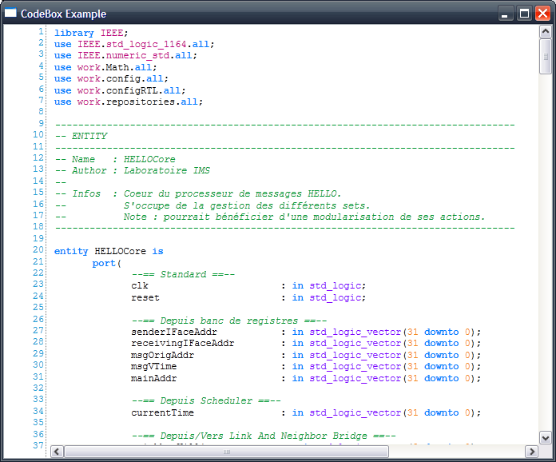
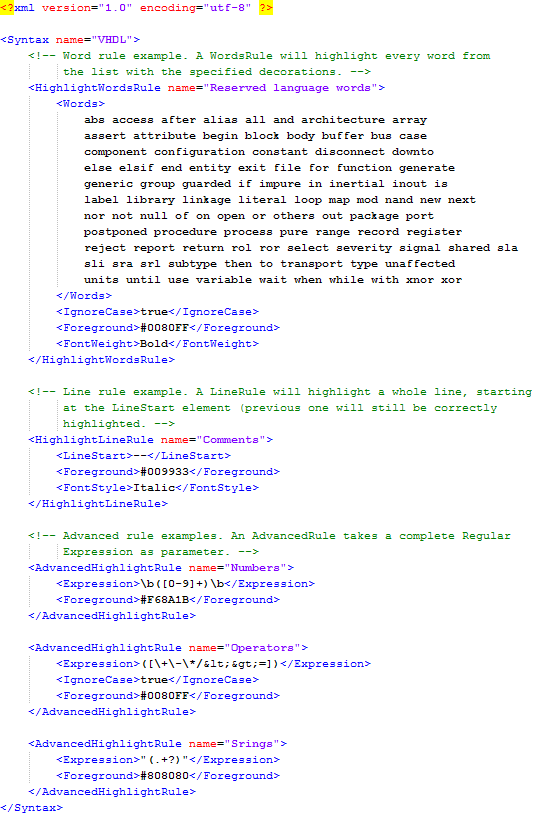

WPF SyntaxHighlightBox
.NET version : created under 4.0.0, not tested with previous releases
Language : WPF / C#
SyntaxHighlightBox is a project to build a fast textbox with support for easy-to-configure syntax highlighting.
Source code is quite simple and rather small, so feel free to modify it to suit your needs.
Syntaxes are described in XML files and support a wide range of patterns.
Highlighting is done by block increment and asynchronously ! As a result, working with a 100.000 line file is as fast as it could be.
Please keep in mind that I developed this only for fast prototyping of different applications that could use a syntax highlighter, and as a result I'm not sure that it is ready for production purposes. Anyway, do not hesitate to propose any bug-fix or code improvement.

Here is an example of syntax description file. Syntaxes currently supports 3 different rules (each rule can be included more than once to cover everything of course) :
- HighlightWordsRule : list of words that will be highlighted using the given decorations.
- HighlightLineRule : give it a line starting pattern and it will highlight and as well as the rest of the line.
- AdvancedHighlightRule : takes a (C# style) Regular Expression as parameter and highlights it using the given decoration attributes.
